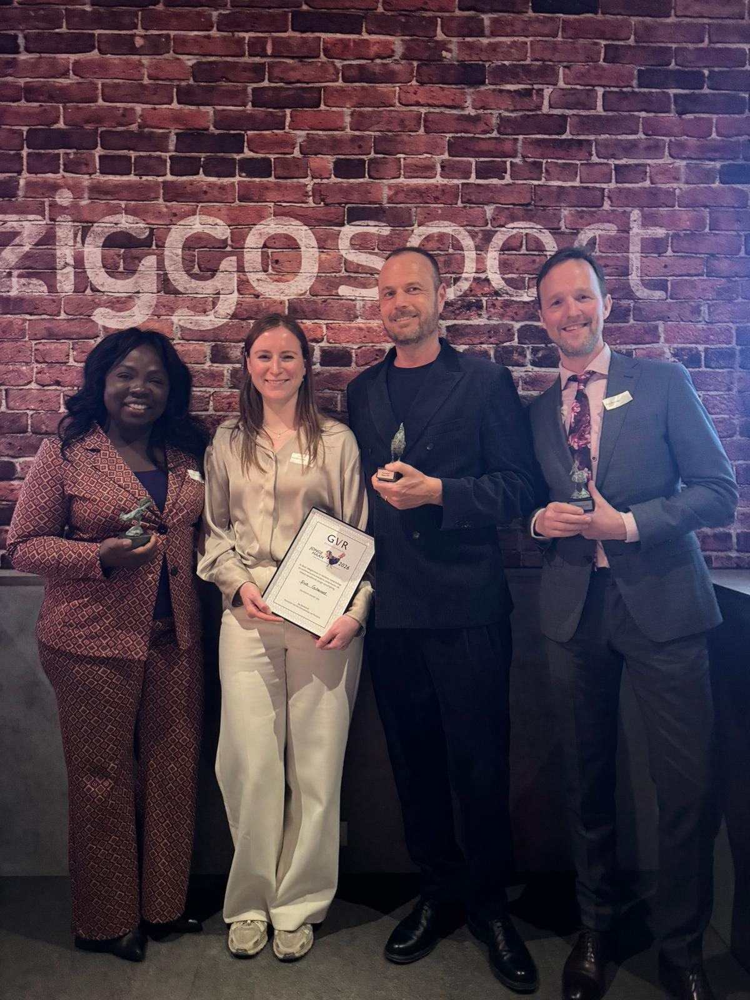
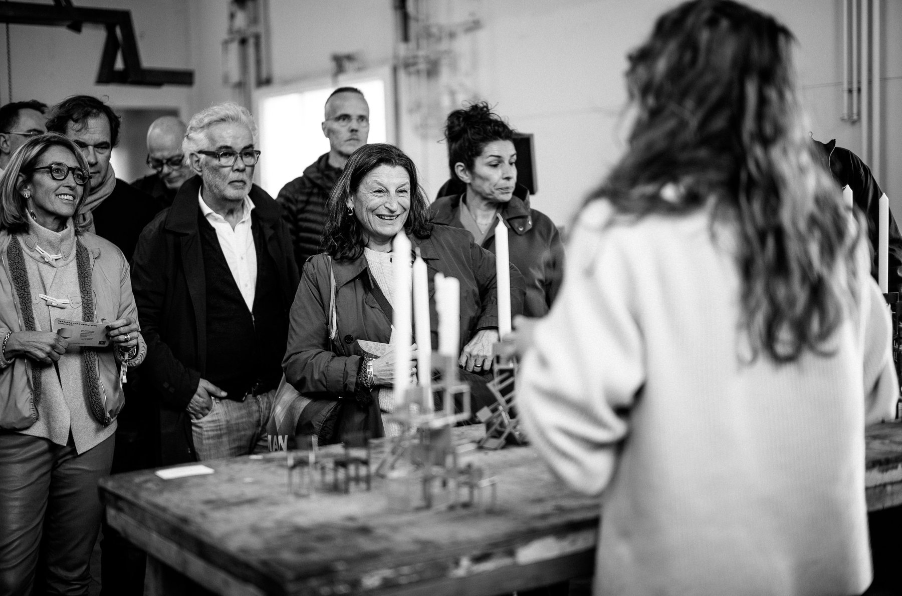
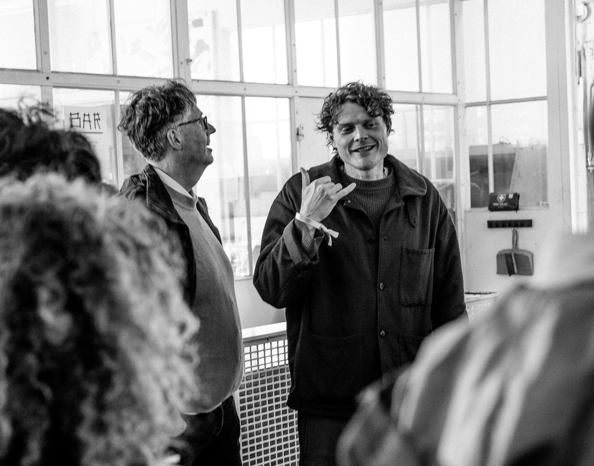
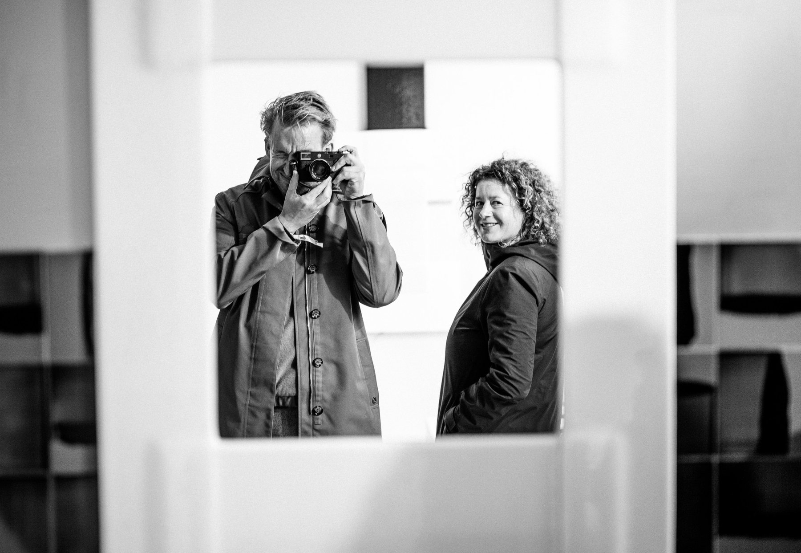
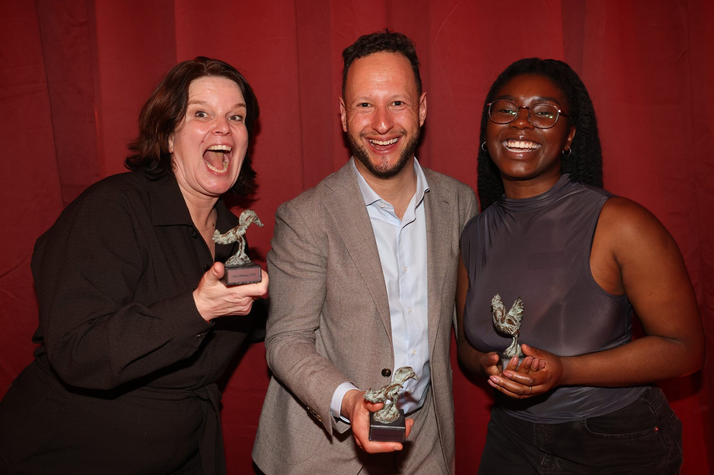
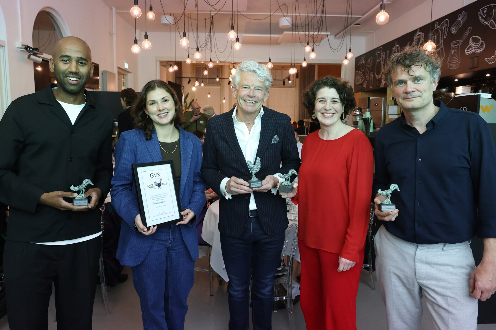
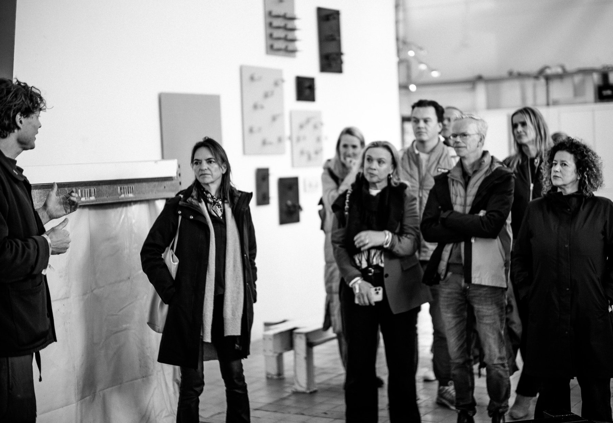

Het bevorderen van de vriendschap in het reclamevak.
Een besloten genootschap van ruim honderd liefhebbers, voorvechters en kenners van het vak. Van jong talent tot wie zijn sporen al verdiende.
De Hanen van 2026
§01 Het Genootschap
Een besloten, informele en veilige plek voor wie het vak draagt.
Sinds 1923 brengt het Genootschap de mensen van het vak samen. Van bureau en opdrachtgever, uit pr en media, uit onderwijs en wetenschap.
Twee tot drie keer per jaar komen de genoten besloten bijeen. Om elkaar te spreken en het vak vooruit te helpen. Op het Hanendiner eert het Genootschap elk jaar wie het vak verder bracht.
“… de ethische, sociale, aesthetische en economische betekenis van de reclame en de erkenning daarvan te bevorderen.”
Het bevorderen van de vriendschap in het reclamevak.




Lidmaatschap
Op voordracht.
Niet op aanvraag.
Genoten dragen nieuwe genoten voor. Het bestuur nodigt uit. De ledenlijst is niet openbaar.
- 001
- 002
- 003
- 004
- ±100Bekend bij de genoten
§02 Hanendiner · 3 maart 2026 · Hilversum
De Hanen van 2026
Een intieme prijs voor vrienden die hun stempel op het vak hebben gedrukt.
Christian BorstlapJean Mineur · Part of a Bigger Plan
Amma AsanteMensch · Commissariaat voor de Media


Sinds 1992 ruim honderd Hanen. Van Jort Kelder tot John de Mol.
§04 Geschiedenis
Ruim honderd jaar

